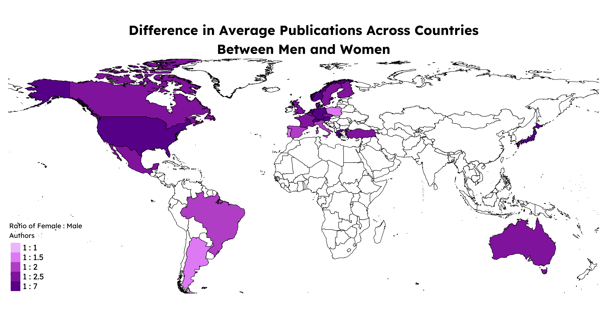
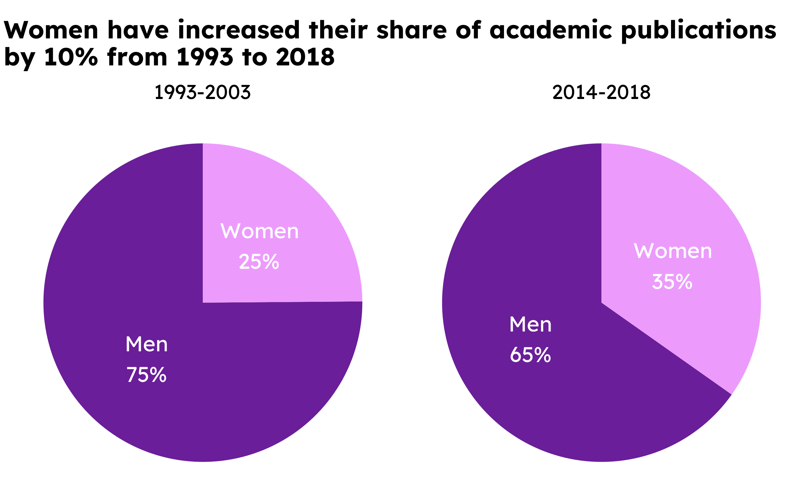
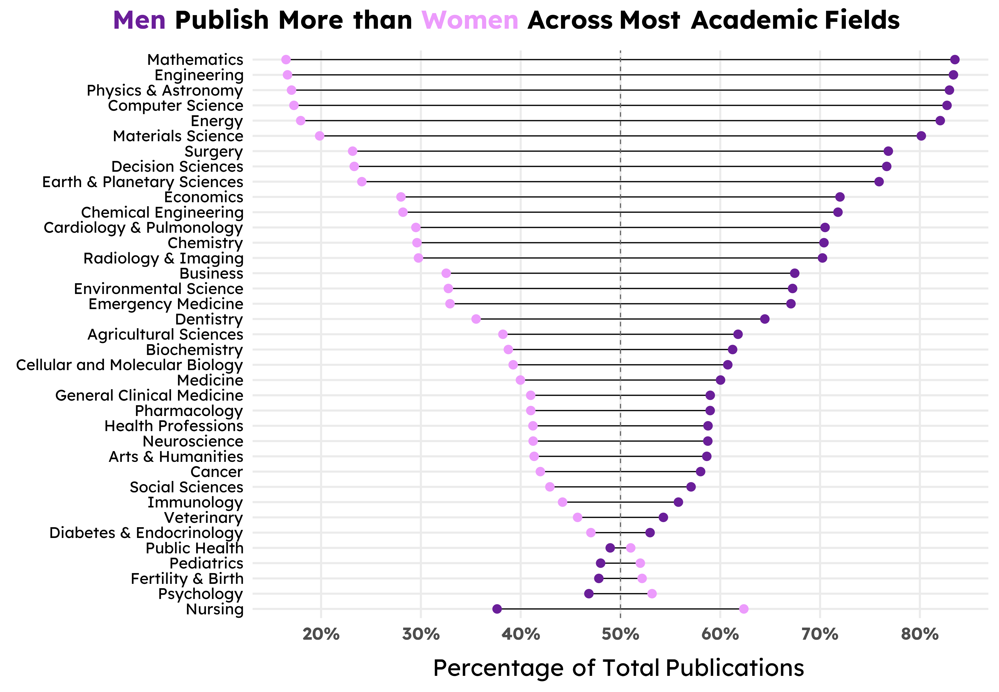

The World Economic Forum defines the gender gap as “the difference between women and men as reflected in social, political, intellectual, cultural, or economic attainments or attitudes”[1]. In everyday life, the gender gap is often discussed in terms of a difference in pay. You may have heard the statistic “72 cents to a dollar” to describe how much the average woman is paid compared to a man for the same work[2]. Another place the gender gap is visible is academia.
While gender bias is present in a number of ways in academic settings, one specific way this manifests is as a gender gap in published research articles. For students pursuing secondary education in masters or PhD programs, the phrase “publish or perish” is often tossed around the labs of many research universities[3]. This refers to the pressure that young researchers feel to make a name for themselves in their field of study. Publications hold weight, status, and value—especially if you can land a publication in a high-impact journal. And if you can’t publish? Then suddenly your job prospects suddenly aren’t looking as good.
In 2020, the publisher Elsevier conducted a global analysis of persistent gender bias in research publications. It was centered in the European union and 15 additional countries across 26 fields of study[4]. To further investigate the relationship between gender and academic publishing, I used this data to create an infographic displaying key trends in gender bias across time, space, and discipline.
Specifically, I wanted to answer the questions:
Is there a gender gap in academic publishing and if so, what does it look like?
What is the gender gap across different academic disciplines?
How has the gender gap changed over time?
What does the gender gap look like from country to country?
The data used in this infographic can be found here. Additionally, this data was part of a larger report by Elsevier. The goal of this infographic was to communicate clearly and effectively the state of the gender gap in published research articles. Additionally, I hope to raise awareness about continued inequity in academia. I do this by employing a number of strategies that I discuss below.
Why These Plots?
The first plot I visualized for this data was the dumbbell plot of authors by gender and academic discipline, shown in Figure 3. Dumbbell plots are very commonly used when comparing disparities between two groups and they’re a hallmark when showing gender-related gaps. Originally, I had ordered the dumbbells from most male authors to least, but when I converted the absolute values to percentages and instead sorted by the difference between genders, the dumbbell plot takes on this lovely DNA-esque shape. While the figure size I went with in the end somewhat distorts the DNA image, I was fascinated by this form and knew I wanted to center this in the final infographic.
The next plot that came relatively quickly were the two pie charts. In the final infographic, I mask the charts to fit the shape of a “journal”, but you can see the orignal visualization in Figure 2. The dates for these two plots might feel arbitrary, but that’s just because those were the only two time periods available to work with in the data. I would love to have more complete data and do a time series analysis of gender and publishings over time.
The last visualization that came together was the map. At first, I had done a simple dodged bar chart of total authors by country. This got the job done, but was rather boring in combination with the other charts. So, at the recommendation of a classmate, I decided to turn it into a choropleth map instead, as shown in Figure 1. This visualization is still somewhat unsatisfying because there was only data for 26 countries, so there are large swaths of missing gray tiles on the map, but overall I am happy with how it came out in comparison with the original bar chart. Plus, maps add a lot of visual flavor that regular plots and charts can sometimes lack.
General Design
As far as the general design of the infographic, a lot of choices were constrained by a lack of space and a lot of information to communicate. It’s amazing how much you can pack into just three visualizations, and trying to communicate all of that clearly in a document that’s reasonably sized was challening. Thus, my final infographic does have a lot of text on the page in addition to the visualizations themselves. I felt added notes of context and quotes from figures of authority where important to add here. I wanted to do this topic justice and felt contextual explanations were the easiest and most straightforward way to make sure the message of the infographic was delivered accurately and clearly.
At first, I chose a vertical orientation for the page setup, but I felt this made it hard to fit the rather large map and dumbbell plot without feeling too cramped. So, I pivoted to a horizontal infographic. This allowed me to give both large visualizations most of the space on the page while also leaving breathing room between elements. This is important to help your reader not feel too overwhelmed by text or images on the page.
Colors, Stereotypes, and Accessibility
Color is something I went back and forth on for awhile. Color should be chosen thoughtfully when visualizing gender because you do not want to reinforce outdated stereotypes, but you also don’t want intentionally obfuscate the message of the plot. For example, neither using pink for women and blue for men, nor pink for men and blue for women is a good idea. The first option leans into gender stereotypes; the second option confuses readers becauses it presents the opposite of what they expect.
The palette you see on the infographic comes courtesy of Sam Shanny-Csik that was used in a gender-related visualization. I liked this palette because it’s monochromatic with purple being the main hue. This single hue and varied saturation means its accessible to people with color-blindness. It also adds a sense of uniformity to the entire presentation to be shown one base color the entire time.
However, this also meant I had a difficult time with contrast for the lighter color used to denote “women.” This text color is harder to read on the light purple background. I did my best to maximize legibility and also consider switching palettes entirely, but ultimately I decided to stick with these colors because of the benefits discussed above.
Additionally, I personally thought choosing to talk about gender using purple as a combination of pink and blue was a nice choice. There are other colors (like yellow or green) that are truly free from gender association in the U.S., but I wanted to lean into the purple, even if it is still traditionally a “feminine” color. The infographic is about raising awareness to increase womens’ voice in academic publishing, so if some people think it looks feminine, well, that’s alright with me.
Text, Font, and Theme
There is a lot of text on this infographic. I believe this choice was both deliberate and necessary given the topic. The map and dumbbell chart both have annotations that draw attention to important features of each resepctive visualization. These notes help guide the reader to the most important takeaways for that particular chart. For the map specifically, I chose to remove any title or subtitle and instead let the legend title communicate the data shown on the map. The map felt cluttered with an additional title right below the block of background text at the top, so shifting it to a concise legend title instead felt better. All other text was kept as brief and clear as possible to leave space for the visualizations themselves.
I decided to stick with one font for the entire infographic: Lexend. I looked for a font that might pair well with Lexend as a title font and even briefly considered switching to my ipad to try some handwritten annotations, but ultimately I stuck with just one font. This choice was made along a similar logic as sticking with purple as the main hue. I wanted visual simplicity and clarity across the whole infographic, so I felt sticking with one uniform font helped contribute to that. Additionally, I endeavored to make the font as large as possible given the spatial context. As someone with poor eyesight myself, I am always frustrated by small text on screens or in presentations. Thus, legibility was very important to me when looking at the infographic as a whole.
Lastly, theme elements for all the plots where uniformly assigned and kept as minimal as possible. Most of the customization happened in Affinity Designer afterwards, so I wanted as clean of a template as possible to build on when exporting my visualizations. Some notable theme elements I did keep were the major grid lines for the dumbbell plot. There are a lot of individual data points on that plot and I wanted to make it easy for the reader to see exactly what percentages they represented.
Context, Message, and Sensitivity
One vital aspect of this visualization to me was to ensure the binary nature of gender that was represented in the data was properly contextualized. The process of using an algorithm to assign gender based off name alone is fraught with many layers of complexity and bias that I could spend multiple blog posts talking about. That being said, I still wanted to use this very imperfect data to talk about I subject I believe is important. Ultimately, the best way for me to discuss identities outside of “man” and “woman” came in the form of a call-out note near the bottom of the infographic. This felt like the least I could do to call attention to the fact that non-gender conforming individuals do crucially important work in academic spaces and deserve to be considered equally in conversations around gender in academia.
Beyond the biases present in the data themselves. I also wanted to include voices of a few women in academia working hard to push for equality. The first quote is from Dr. Miyoko O. Watanabe, the deputy executive director and director of the office for diversity and inclusion at the Japan Science and Technology Agency. I appreciated how Dr. Watanabe emphasized the importance of recognizing intersectionality in discussions of diversity. The second quote is from Charlina Vitcheva (MA, MS) who is the acting director-general of the Joint Research Centre and European Commission. I felt this quote was a fitting way to both acknowledge past progress while also encouraging future advancements. Both of these quotes came from Elsevier’s report that was created from the dataset I use in this infographic.
These quotes were small ways to drive home the primary message of the infographic, which is twofold: to explore the gender gap in academic publshing, and to raise awareness for inequity in academia.
The Coding Breakdown
All the code for the visualizations can be viewed by clicking the dropdown arrows. Each arrow is accompanied by a short description of what that code chunk is for.
Load libraries, data, and settings
library(tidyverse)library(here)library(janitor)library(readxl)library(patchwork)library(showtext)library(glue)library(ggtext)library(scales)library(sf)library(tmap)library(grid)library(gridtext)# Read in dataauthor_stats =read_xlsx(here("data", "authors.xlsx"), sheet =1) %>%clean_names() %>%mutate(gender =str_to_title(gender))# Read in countries geometriescountry_bounds <-read_sf(here("data", "countries", "world-administrative-boundaries.shp")) %>%select(iso3, name, geometry)# Enable showtextshowtext_auto()# Ensure showtext is usedshowtext_opts(dpi =300)# Import fontfont_add_google(name ="Lexend", family ="lexend")
The Map
Data wrangling
# Calculate summary stats grouped by fieldcountries <- author_stats %>%group_by(country, gender) %>%summarise(country_gender =sum(authors)) %>%mutate(total_authors =sum(country_gender),percent_country = country_gender/total_authors)# pivot wider to add columns of the number of authors by field by men or womencountries_wide <- countries %>%pivot_wider(id_cols =c(country, total_authors),names_from = gender,values_from =c(country_gender, percent_country),names_prefix ="" ) %>%group_by(country) %>%mutate(total_authors =first(total_authors),gender_gap = country_gender_Men - country_gender_Women,percent_gender_gap = percent_country_Men - percent_country_Women,gender_ratio = country_gender_Men/country_gender_Women) %>%ungroup() # Join countries geometriescountries_wide <-left_join(countries_wide, country_bounds, by =join_by(country== iso3))# Reassert that it's a sf data framecountries_wide <- countries_wide %>%st_as_sf() %>%drop_na() %>%filter(!name %in%c("Azores Islands")) # remove extra country # Decided to bin the gender ratio to make the visualization easiercountries_new <- countries_wide %>%mutate(gender_ratio =round(gender_ratio /0.5) *0.5)
Mapping code
# Map of average publications by countrymap <-tm_shape(countries_new) +tm_fill("gender_ratio",palette =c("#F2C5FD", "#EC9BFC", "#D67BE6", "#A93CBA", "#8C2AA7", "#6A1E99"),breaks =c(0, 1, 1.5, 2, 2.5, 7),labels =c('1 : 1', '1 : 1.5', '1 : 2', '1 : 2.5', '1 : 7'),title ="Ratio of Female : Male\nAuthors") +tm_shape(country_bounds) +tm_borders(col ="black", lwd =0.8) +tm_layout(main.title ="Difference in Average Publications Across Countries\nBetween Men and Women",main.title.size =1.8, main.title.position ="center",main.title.fontface ="bold",bg.color ="transparent",inner.margins =c(0, 0, 0, 0), # Adjust margins (top, right, bottom, left)legend.position =c(0, 0),legend.text.size =1.1,legend.title.size =1.1,fontfamily ="lexend",frame =FALSE)map

Figure 1: The gender publishing gap by country
The Pie Chart
Data wrangling
# Filter data into the two different time periods# Older dataauthor_old <- author_stats %>%filter(period =="1999-2003")# Generate some summary statsold_sum <- author_old %>%group_by(gender) %>%summarise(gender_authors =sum(authors)) %>%ungroup() %>%mutate(total_authors =sum(gender_authors), percent_pub = gender_authors/total_authors)# More recent dataauthor_new <- author_stats %>%filter(period =="2014-2018")# Generate some summary statsnew_sum <- author_new %>%group_by(gender) %>%summarise(gender_authors =sum(authors)) %>%ungroup() %>%mutate(total_authors =sum(gender_authors), percent_pub = gender_authors/total_authors)
Pie chart code
# Pie chart for the older yearsold_pie <-ggplot(old_sum, aes(x ="", y = percent_pub, fill = gender)) +geom_bar(stat ="identity", width =1) +coord_polar("y", start =0) +geom_text(aes(label =paste0(gender, "\n", scales::percent(percent_pub, accuracy =1)), family ="lexend"),position =position_stack(vjust =0.5),color ="white", size =6) +scale_fill_manual(values =c("Women"="#ec9bfc", "Men"="#6A1E99")) +theme_void() +labs(subtitle ="1993-2003",fill ="") +theme(text =element_text(family ="lexend"),legend.text =element_text(family ="lexend"),plot.subtitle =element_text(family ="lexend", hjust =0.5),legend.position ="none" )# Pie chart for the more recent yearsnew_pie <-ggplot(new_sum, aes(x ="", y = percent_pub, fill = gender)) +geom_bar(stat ="identity", width =1) +coord_polar("y", start =0) +geom_text(aes(label =paste0(gender, "\n", scales::percent(percent_pub, accuracy =1)), family ="lexend"),position =position_stack(vjust =0.5),color ="white", size =6) +scale_fill_manual(values =c("Women"="#ec9bfc", "Men"="#6A1E99")) +theme_void() +labs(subtitle ="2014-2018",fill ="") +theme(text =element_text(family ="lexend"),legend.text =element_text(family ="lexend"),plot.subtitle =element_text(family ="lexend", hjust =0.5),legend.position ="none" )# Stick the two figures togetherpatchwork <- old_pie + new_piepatch_final <- patchwork +plot_annotation(title ="Women have increased their share of academic publications\nby 10% from 1993 to 2018",caption ="Source: Elsevier Data Repository | Graphic: Haylee Oyler") &theme( text =element_text(family ="lexend"),plot.title =element_text(face ="bold", size =20),plot.subtitle =element_text(size =16),plot.background =element_rect(fill ="white", color =NA),legend.text =element_text(size=16, face ="bold"),plot.caption =element_text(size=10),plot.background =element_rect(fill ="transparent", color =NA),panel.background =element_rect(fill ="transparent", color =NA),legend.background =element_rect(fill ="transparent", color =NA), legend.key =element_rect(fill ="transparent", color =NA) )patch_final

Figure 2: The gender publishing gap over time
The Dumbbell Plot
Data wrangling
# Calculate summary stats grouped by fieldfields <- author_stats %>%group_by(subject_area_or_subfield, gender) %>%summarise(field_gender =sum(authors)) %>%mutate(total_authors =sum(field_gender),percent_field = field_gender/total_authors)# pivot wider to add columns of the number of authors by field by men or womenfields_wide <- fields %>%pivot_wider(id_cols =c(subject_area_or_subfield, total_authors),names_from = gender,values_from =c(field_gender, percent_field),names_prefix ="" ) %>%group_by(subject_area_or_subfield) %>%mutate(total_authors =first(total_authors),gender_gap = field_gender_Men - field_gender_Women,percent_gender_gap = percent_field_Men - percent_field_Women) %>%ungroup() %>%filter(subject_area_or_subfield !="ALL")# Reorder data by the gender gap from high to lowfields_wide <- fields_wide %>%mutate(subject_area_or_subfield =fct_reorder(.f = subject_area_or_subfield, .x = percent_gender_gap))
Dumbbell plot code
# Create color-coded plot titledumbbell_title <- glue::glue("<span style='color:#6A1E99;'>**Men**</span> Publish More than <span style='color:#ec9bfc;'>**Women**</span> Across\nMost Academic Fields")# dumbbell plotdumbbell_plot <-ggplot(fields_wide) +geom_linerange(aes(y = subject_area_or_subfield,xmin = percent_field_Women, xmax = percent_field_Men)) +geom_point(aes(x = percent_field_Women, y = subject_area_or_subfield, color ="Women"), size =3.5) +geom_point(aes(x = percent_field_Men, y = subject_area_or_subfield, color ="Men"),size =3.5) +geom_vline(xintercept = .5, linetype ="dashed", color ="gray40") +scale_x_continuous(breaks =seq(0, 1, by =0.1),labels = scales::percent_format(scale =100)) +scale_color_manual(values =c("Women"="#ec9bfc", "Men"="#6A1E99")) +labs(title = dumbbell_title, x ="Percentage of Total Publications",y ="") +theme_minimal(base_size =20) +theme(text =element_text(family ="lexend"),plot.title = ggtext::element_textbox(face ="bold", margin =margin(t =0,r =0, b =0, l =-130),padding =margin(t =0, r =0, b =15, l =0)),axis.title = ggtext::element_textbox(size =rel(1.1),color ="black",padding =margin(t =10, r =0, b =0, l =0)),axis.text.x =element_text(size=rel(1), face ="bold"),axis.text.y =element_text(size=rel(0.9), color ="black"),plot.caption =element_text(size=rel(0.6)),panel.grid.minor.x =element_blank(),legend.position="none" )dumbbell_plot

Figure 3: The gender publishing gap across disciplines
Rawat S, Meena S. Publish or perish: Where are we heading? Journal of research in medical sciences : the official journal of Isfahan University of Medical Sciences. 2014. Available: https://pmc.ncbi.nlm.nih.gov/articles/PMC3999612/
![]()